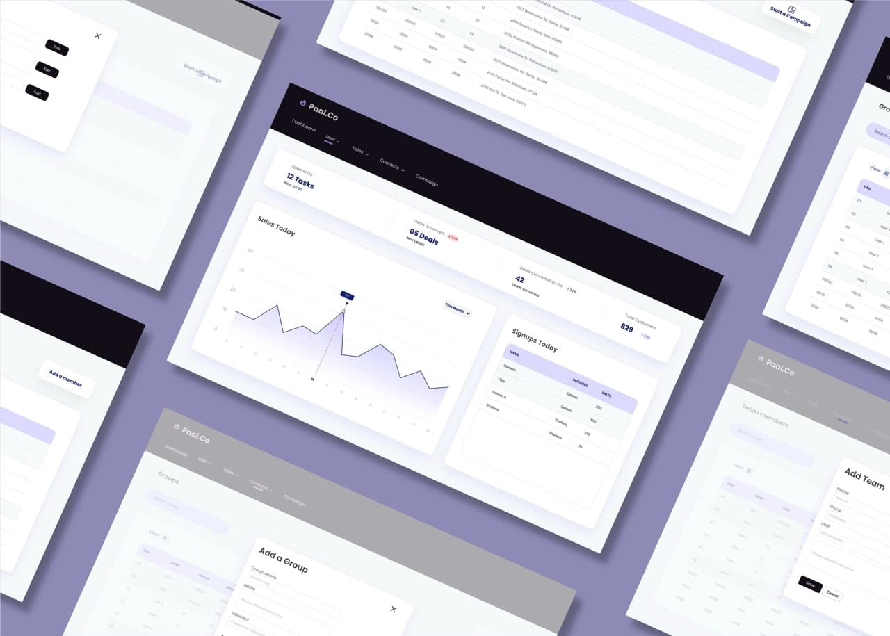
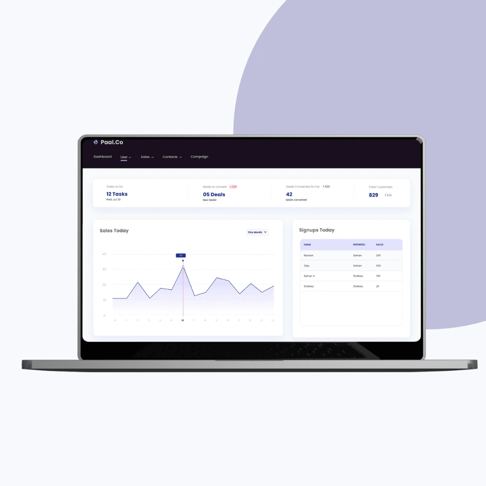
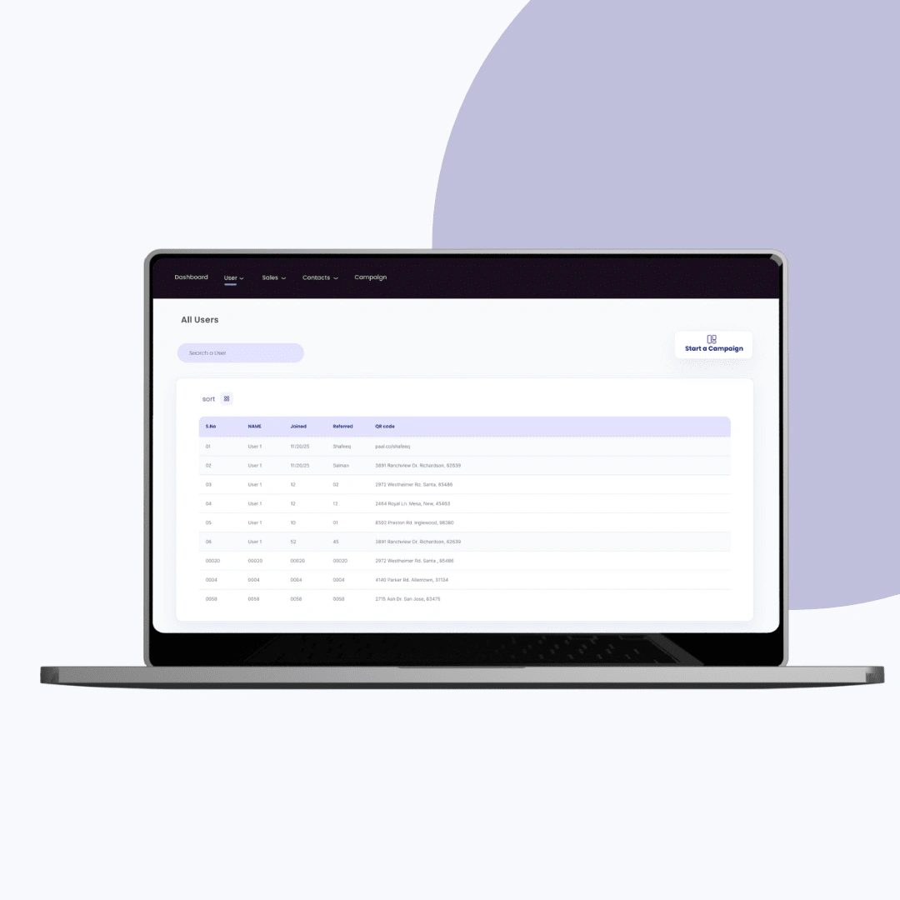
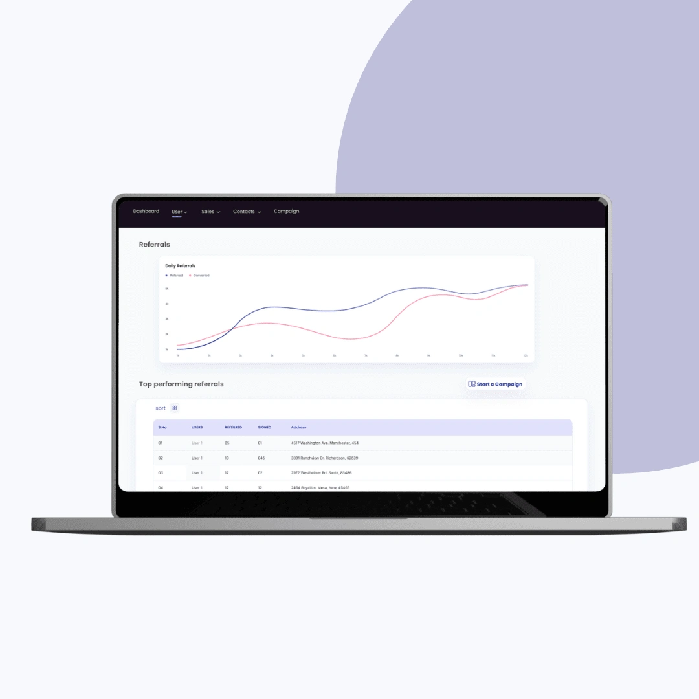
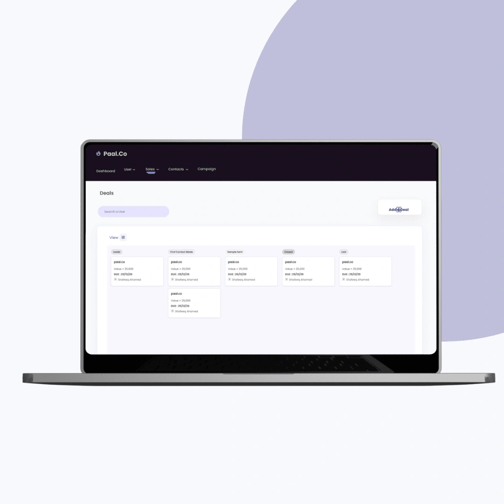
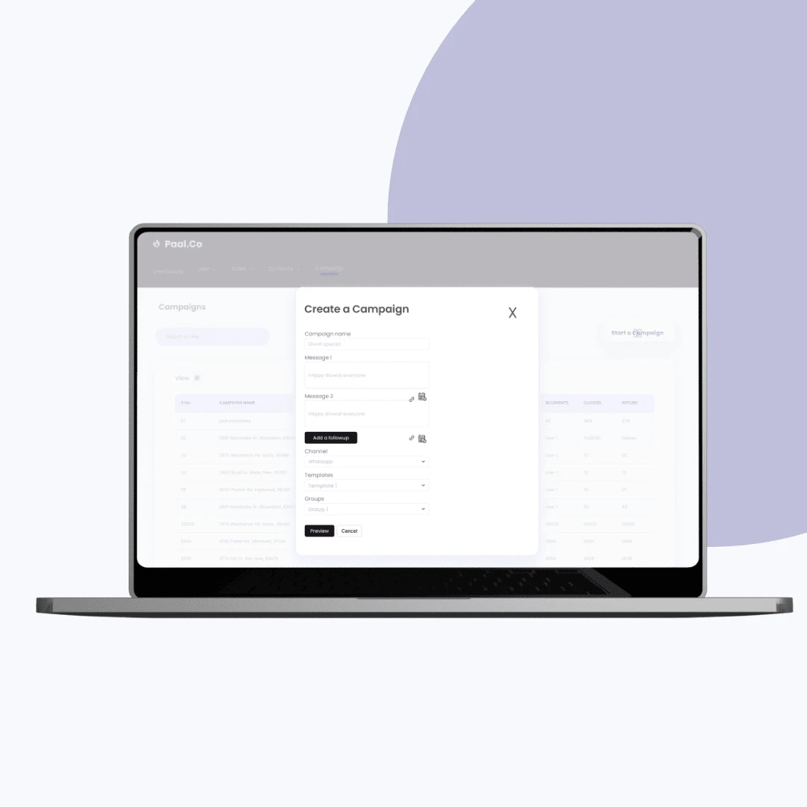

A role-based CRM that runs a dairy delivery business, from the warehouse to the doorstep.
Paal.co is a UI/UX design project for a milk and dairy delivery CRM. I designed a unified web platform with distinct dashboards for customers, delivery agents, and administrators, tying together order tracking, route automation, and gamified loyalty.

The challenge: one platform, three very different users
Paal.co needed a CRM built specifically for dairy delivery, not a generic tool bent into shape. The operation runs on referral systems, live order tracking, and route automation, and it has to serve three audiences at once: customers placing recurring orders, delivery agents working on the move, and administrators managing inventory and fulfilment. The design had to hold all three in a single coherent product without any one role feeling like an afterthought.


The approach: map the operation, then design for each role
I opened with discovery workshops and stakeholder interviews to surface how the delivery operation actually works, then mapped the user journeys and laid out functional structures for each CRM module. I designed separate but cohesive interfaces so the admin and customer experiences share a visual language while fitting their distinct jobs. Referral mechanics were built as gamified features with visual rewards and milestone tracking rather than a buried points counter.


What we delivered
The design ships an admin dashboard for order management, inventory updates, and referral tracking; a customer panel for browsing, ordering, tracking, and managing loyalty points; and a delivery interface focused on real-time status and route optimisation. A tiered reward system visualizes milestone progress, role-based access control governs who sees what, and interactive order timelines make fulfilment legible. The delivery views are mobile-responsive so agents can work from the road.
